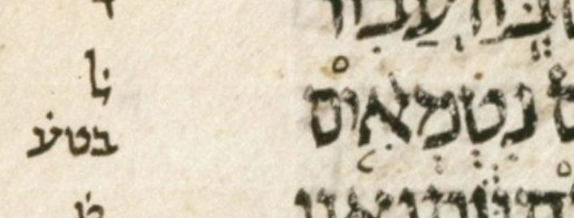

This page documents the accent-grammar checker's “almost errors”: cantillation features that a naïve checker would flag, but that we do not flag — and, in each case, the reading we chose is a choice, not a forced move. Two kinds appear here.
First, the editorial charities: places where the checker silently normalizes away a genuine quirk of WLC — sometimes a real Leningrad Codex feature, sometimes an artifact introduced in BHS or WLC — and reads the text charitably rather than reporting an error. Here something at least questionable is being forgiven; the value is transparency about exactly what the checker quietly fixes, in which direction, and why.
Second, the masoretically-blessed oddities: features that look error-like — two cantillation accents crowding one letter or one word — but that are 100% official masoretic tradition, attested in the standard witnesses, not leniencies specific to LC, BHS, or WLC. Nothing here is forgiven; the checker accepts these, and where it must pick how to represent one for parsing — which mark to carry into the parse, or how to fuse a pair — that choice is among readings that all parse cleanly (the telisha gedola exhibit below shows the alternatives). The headline case is Ezekiel 20:31’s mahapakh + azla (mahapakh!azla), the only word in Tanakh with two conjunctive accents on one letter.
Companion pages: the prose Goerwitz checker run and the poetic checker run list the verses the checker actually flags; this page is the inventory of what it deliberately does not.
Each charity below names what the checker normalizes, the direction, and why, with a citation. Both reinterpret a mark the manuscript should not have here — a prose geresh muqdam read as a plain geresh, and a stray poetic geresh promoted into a revia mugrash.
Geresh muqdam (U+059D) is a poetic-only sign. In the 21 prose books WLC uses it just twice — Lev. 1:3 (alone) and 2 Kings 17:13 — as a typographic device standing in for a plain geresh. The checker reads it as a plain geresh, so the prose grammar (which has no geresh muqdam) sees the geresh it expects. Direction: poetic-looking sign → its prose counterpart. tanach.us itself made the same correction in both verses — changes 2020.09.22-1 (Lev. 1:3) and 2020.09.22-2 (2 Kings 17:13), each described “Change geresh muqdam to geresh.”
The two verses differ in what happens next. In Lev. 1:3 the geresh muqdam stands alone, so the charity is the whole story. In 2 Kings 17:13 the converted geresh then sits on a word that also carries a telisha gedola — so once the charity has run, what remains is one of the telisha gedola + geresh oddities below (the only one of those five whose geresh reaches the checker by way of a charity).
A plain geresh in a poetic verse is otherwise a lexical error: the poetic grammar has no plain geresh. The sole charitable exception is Psalms 124:4, where a revia and a plain geresh share one letter. There the checker reads the pair charitably as a single revia mugrash — the established poetic compound — by normalizing the two same-letter marks into order (revia + geresh → geresh + revia) and promoting the plain geresh to geresh muqdam, so the existing geresh muqdam + revia → revia mugrash rule consumes both as one token.
This within-letter order normalization is licit precisely because it stays within a single letter — we are liberal about mark order on one letter (questionable penmanship is not our concern) but preserve order across letters, which is meaningful reading order. See the tanach.us Psalms 124:4 note.
The features below would make a naïve checker blink — two accents sharing one letter or one word — but none of them is a quirk of LC, BHS, or WLC to be forgiven. They are official masoretic tradition, attested in the standard witnesses. The checker accepts them; its only real decision is one of representation — which mark to carry into the parse, or how to fuse a pair — and, as the telisha gedola exhibit shows, that decision is a choice among readings that all parse cleanly.
Five WLC words carry both a telisha gedola and a geresh-family companion (a plain geresh or gershayim — or, in 2 Kings 17:13, a geresh that the geresh muqdam charity above produced). This double-marking is not a quirk to forgive: it is official masoretic tradition, attested in the standard witnesses. What the checker must decide is only how to represent it for parsing — and there it keeps the telisha gedola and drops the companion. That is a choice, but a choice among grammatically-clean options: the verses also parse cleanly if the telisha gedola is dropped instead, or if both marks are kept as a sequence. The table below shows, for each word, the real WLC form (both marks, post-charity) alongside the alternate forms each reading would use: the telisha-gedola-only and geresh-only forms, and — for the three same-letter words — a synthesized repeated-word sequence that spreads the two marks across two copies of the word, in either order.
| verse | word | keep_telg | keep_gerstar | telg, then geresh | geresh, then telg |
|---|---|---|---|---|---|
| Genesis 5:29 | זֶ֠֞ה | זֶ֠ה | זֶ֞ה | זֶ֠ה זֶ֞ה | זֶ֞ה זֶ֠ה |
| Tsefaniah 2:15 | זֹ֠֞את | זֹ֠את | זֹ֞את | זֹ֠את זֹ֞את | זֹ֞את זֹ֠את |
| 2Kings 17:13 | שֻׁ֠֜בוּ | שֻׁ֠בוּ | שֻׁ֜בוּ | שֻׁ֠בוּ שֻׁ֜בוּ | שֻׁ֜בוּ שֻׁ֠בוּ |
| Levit 10:4 | קִ֠רְב֞וּ | קִ֠רְבוּ | קִרְב֞וּ | — | — |
| Ezekiel 48:10 | וּ֠לְאֵ֜לֶּה | וּ֠לְאֵלֶּה | וּלְאֵ֜לֶּה | — | — |
Every one of the five verses parses cleanly under all three readings (no ERROR, no NO_PARSE), so the choice is not forced by grammaticality — it is purely a representation preference for the telisha gedola. The two verses below show the full parse tree under each reading (one same-letter case, one cross-letter); the trees differ exactly at the companion word, as expected.
keep_telg: drop the geresh-family mark, keep the telisha gedola (what the checker does)
| 0 | slqc | ||||||||||||||
| 1 | atnc | slqc | |||||||||||||
| 2 | zaqqc | atnc | zaqqc | slqc | |||||||||||
| 3 | pashc | zaqqp | zaqqc | atnc | revc | zaqqc | zaqqc | slqc | |||||||
| 4 | telgp | pashp | pashp | zaqqp | tipp | atnp | lgmp | revp | pashp | zaqqp | pashp | zaqqp | tipp | slqp | |
| telg | mah pash | mun zaqq | pash | zaqq | tip | mun atn | lgm | mun rev | pash | zaqq | yet | mun zaqq | tip | mer slq | |
keep_gerstar: drop the telisha gedola, keep the geresh-family mark
| 0 | slqc | ||||||||||||||
| 1 | atnc | slqc | |||||||||||||
| 2 | zaqqc | atnc | zaqqc | slqc | |||||||||||
| 3 | pashc | zaqqp | zaqqc | atnc | revc | zaqqc | zaqqc | slqc | |||||||
| 4 | gerp | pashp | pashp | zaqqp | tipp | atnp | lgmp | revp | pashp | zaqqp | pashp | zaqqp | tipp | slqp | |
| ger2 | mah pash | mun zaqq | pash | zaqq | tip | mun atn | lgm | mun rev | pash | zaqq | yet | mun zaqq | tip | mer slq | |
keep_both: keep both, as a telisha gedola then a geresh phrase
| 0 | slqc | |||||||||||||||
| 1 | atnc | slqc | ||||||||||||||
| 2 | zaqqc | atnc | zaqqc | slqc | ||||||||||||
| 3 | pashc | zaqqp | zaqqc | atnc | revc | zaqqc | zaqqc | slqc | ||||||||
| 4 | telgp | pashc | pashp | zaqqp | tipp | atnp | lgmp | revp | pashp | zaqqp | pashp | zaqqp | tipp | slqp | ||
| 5 | gerp | pashp | ||||||||||||||
| telg | ger2 | mah pash | mun zaqq | pash | zaqq | tip | mun atn | lgm | mun rev | pash | zaqq | yet | mun zaqq | tip | mer slq | |
keep_telg: drop the geresh-family mark, keep the telisha gedola (what the checker does)
| 0 | slqc | ||||||||||
| 1 | atnc | slqc | |||||||||
| 2 | zaqqc | atnc | zaqqc | slqc | |||||||
| 3 | revp | zaqqc | tipp | atnp | revp | zaqqc | tipp | slqp | |||
| 4 | pashp | zaqqp | pashc | zaqqp | |||||||
| 5 | telgp | pashp | |||||||||
| mun rev | pash | mun zaqq | mer tip | mun atn | mun rev | telg | mah pash | mun zaqq | tip | slq | |
keep_gerstar: drop the telisha gedola, keep the geresh-family mark
| 0 | slqc | ||||||||||
| 1 | atnc | slqc | |||||||||
| 2 | zaqqc | atnc | zaqqc | slqc | |||||||
| 3 | revp | zaqqc | tipp | atnp | revp | zaqqc | tipp | slqp | |||
| 4 | pashp | zaqqp | pashc | zaqqp | |||||||
| 5 | gerp | pashp | |||||||||
| mun rev | pash | mun zaqq | mer tip | mun atn | mun rev | ger2 | mah pash | mun zaqq | tip | slq | |
keep_both: keep both, as a telisha gedola then a geresh phrase
| 0 | slqc | |||||||||||
| 1 | atnc | slqc | ||||||||||
| 2 | zaqqc | atnc | zaqqc | slqc | ||||||||
| 3 | revp | zaqqc | tipp | atnp | revp | zaqqc | tipp | slqp | ||||
| 4 | pashp | zaqqp | pashc | zaqqp | ||||||||
| 5 | telgp | pashc | ||||||||||
| 6 | gerp | pashp | ||||||||||
| mun rev | pash | mun zaqq | mer tip | mun atn | mun rev | telg | ger2 | mah pash | mun zaqq | tip | slq | |
A presentation note: even the same-letter keep-both case (Zephaniah 2:15) renders as a sequence — a telisha gedola phrase, then a geresh phrase, one tree level deeper — not as a fused same-letter cluster, because the telisha gedola is prepositive (relocated to the front of the word) and the scanner emits the two marks as separate tokens. The synthesized repeated-word columns in the table above make that same sequence explicit on two separate stress units rather than crowded onto one letter; the cross-letter words (Leviticus 10:4, Ezekiel 48:10) already carry their two marks on two letters, so they need no such illustration and the table leaves those cells blank.
In Ezekiel 20:31, נִטְמְאִ֤֨ים carries both a mahapakh and a qadma on its alef. It is the only word in Tanakh with two conjunctive accents on one letter. The checker accepts it outright: the scanner fuses the pair into one mahapakh!azla token, which the grammar parses as an ordinary accent. Unlike the telisha gedola words, nothing is dropped: both marks survive into the single fused token.
That this double accent is intentional in the LC is supported by the word’s masorah qetannah note, ל̇ בטע̇ (“[this is the] one [word in all Tanakh that appears] with [these] accents [arranged like this]”):

MAM has this double accent, and has a documentation note citing support for it from three standard witnesses (Aleppo, Leningrad, Cairo) and their masorot. MAM also cites Yeivin 28.1 p. 232. MAM spells out why this double accent is puzzling yet standard:
זאת התיבה היחידה בכל המקרא שיש בה שני טעמים מחברים בהברה אחת. הקדמא קודמת למהפך בקריאה, כמו בעוד שש מקומות במקרא (שבהם הקדמא במקום הראוי לגעיה והמהפך בהברת הטעם), כגון: ויקרא כה,מו; במדבר [כ,א].
This is the only word in all of Tanakh with two conjunctive accents on one letter; the qadma precedes the mahapakh in chanting, as in six other places where [(on a single word)] a qadma occupies a syllable fit for a ga‘ya and a mahapakh occupies the stressed syllable, for example: Lev. 25:46; Num. 20:1.
The note names only those two as examples — and writes “Num. 21:1” where it means Num. 20:1. The other four verses alluded to above are as follows, making six total: Ezek. 43:11; 2 Chron. 35:25; Dan. 3:2; Ezra 7:24. See the full note on the MAM-with-doc Ezekiel page. Because the witnesses agree, this double accent is whitelisted rather than treated an error.
The instructive contrast is Lev. 25:20, the only other prose word with two accents on one letter (a mahapakh and a tipeḥa). There the witnesses do not agree — MAM keeps only the tipeḥa and WLC tags the word anomalous — so it may well be an error in the LC, and the checker flags it (as a lexical error). Same surface shape, opposite verdict, decided by the witnesses. Its full treatment is on the Goerwitz page. The poetic merkha!azla of Psalms 56:10 is the same story on the poetic side: the double accent in the LC has no support from other manuscripts, so it, like Lev. 25:20, is flagged as an error.
How forced is the fusion? Unlike the telisha gedola readings above — where every alternative parses cleanly and the choice is merely cosmetic — here the grammar all but dictates it. The table below runs the verse through the real checker under each of the five ways to present the pair: the fused token, dropping either mark, and keeping both as a sequence in either order. Only two parse: the fused mahapakh!azla token and the qadma-then-mahapakh sequence — and those coincide, because the same pashta phrase rule that accepts the fused cluster also accepts the cross-letter azla mahapakh pair, in exactly the reading order the MAM note describes (qadma before mahapakh).
Why the other three readings fail is worth spelling out, because it is not merely that “a word needs an accent.” The pashta here is served by three conjunctives: a telisha qetanna on the preceding word אַתֶּם, then the qadma and mahapakh sharing this word’s alef. Once a telisha qetanna heads the chain, the grammar admits only telisha-qetanna azla mahapakh pashta (or its one-token analogue telisha-qetanna mahapakh!azla pashta) — the azla is obligatory, because the masoretic rule (Yeivin §246) is that a telisha qetanna is always followed by azla. So keep the mahapakh, drop the qadma leaves a telisha qetanna directly before a bare mahapakh — a sequence the tradition never produces and the grammar has no rule for — and the parse falls into error recovery (verdict ERROR, not even a clean non-parse). Dropping the mahapakh instead leaves an azla with nothing between it and the pashta, also unruled (azla must be followed by mahapakh or merkha); and the mahapakh-then-qadma order is simply backwards. A bare mahapakh pashta is a perfectly legal one-servus pashta elsewhere, so dropping the qadma would parse if this pashta stood alone — but it does not, because the telisha qetanna makes the chain three deep.
| reading | verdict |
|---|---|
| fuse into one mahapakh!azla token (what the checker does) | clean |
| keep the mahapakh, drop the qadma | ERROR |
| keep the qadma, drop the mahapakh | ERROR |
| keep both, as a qadma then mahapakh sequence | clean |
| keep both, as a mahapakh then qadma sequence | ERROR |
The checker’s parse tree for the verse, with the fused token shown as mahapakh!azla:
| 0 | slqc | |||||||||||
| 1 | atnc | slqc | ||||||||||
| 2 | zaqqc | atnc | zaqqc | slqc | ||||||||
| 3 | pashc | zaqqp | tipc | atnp | revp | zaqqc | tipp | slqp | ||||
| 4 | pazp | pashc | tevp | tipp | pashp | zaqqp | ||||||
| 5 | gerp | pashp | ||||||||||
| mun paz | telq qom ger | telq mah!qom pash | zaqq | tev | mer tip | mun atn | rev | pash | mun zaqq | tip | slq | |
{kind=link}